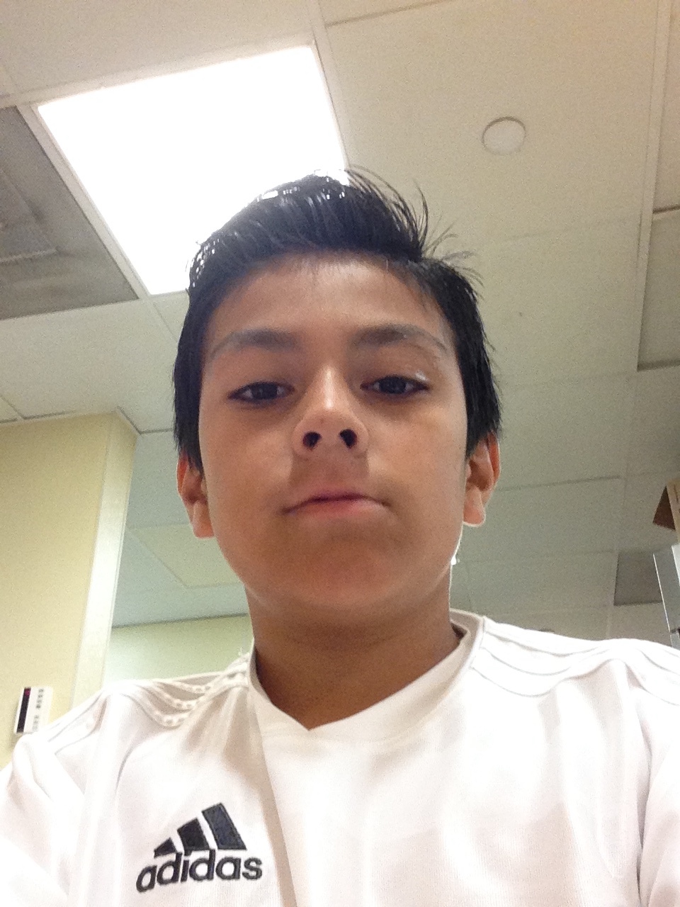
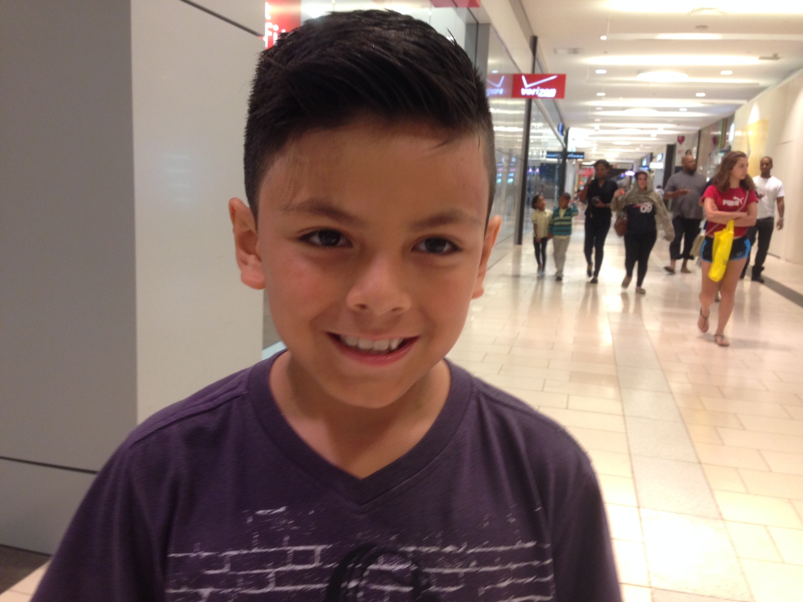
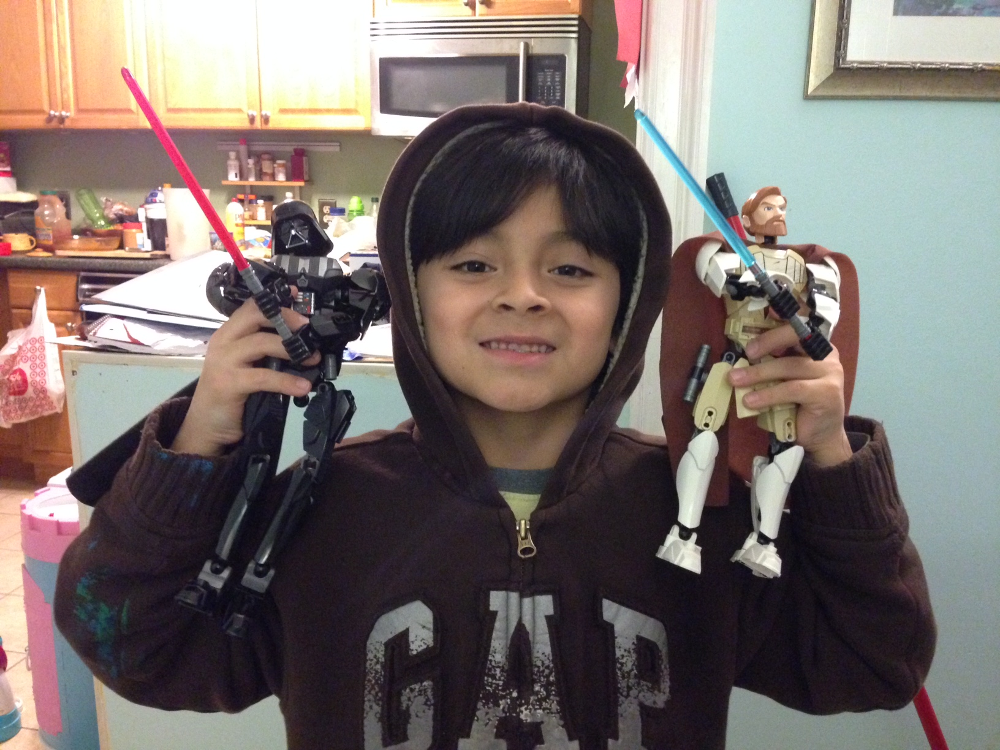
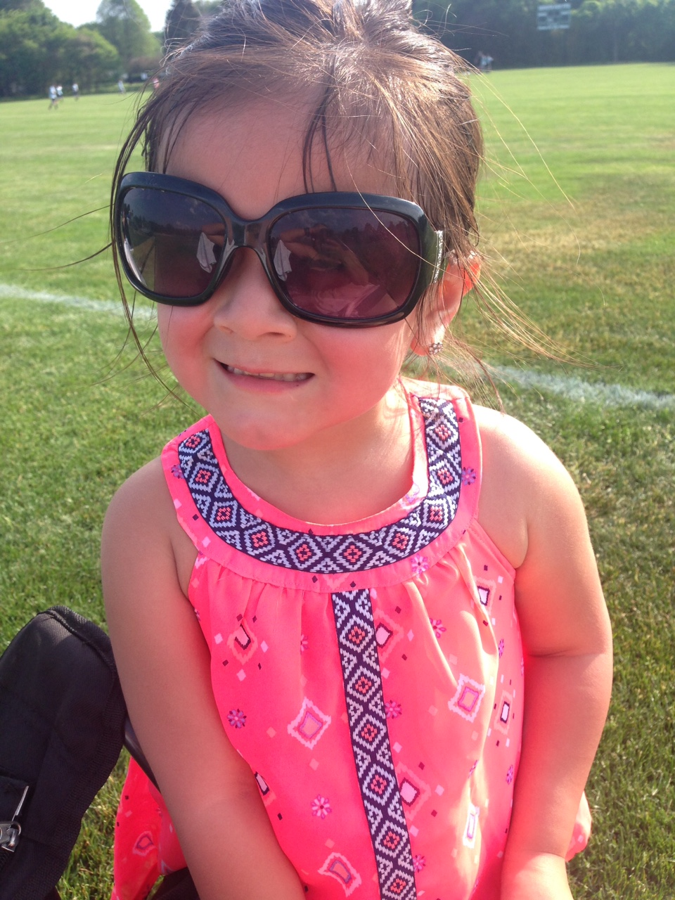
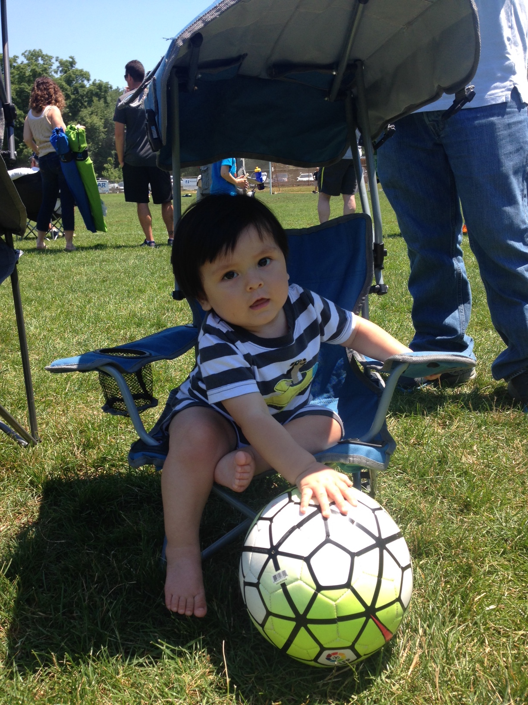
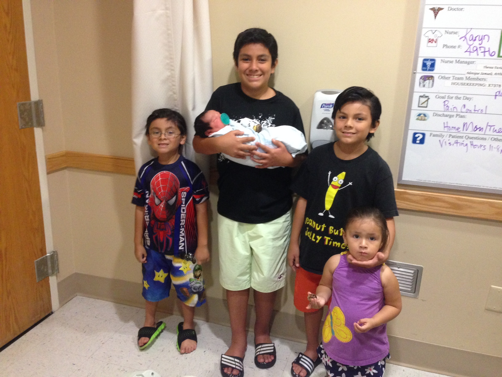

EDUCATION
Norwalk Community College Calculus II Introduction to C Introduction to Programming Using Java Object Oriented Programming Using Java University of Connecticut Calculus I Physics Chemistry A100 Program Completed week 2
SKILLS
Programming Languages C C++ Java GUI - Swing and FX HTML CSS JavaScript Spoken Languages English - fluent Spanish - fluent Portuguese - basic
FAMILY
In the beginning it was just Juli and me Then Robert came along  And then John  And then Matthew  And then Brooke  And finally Eric  And then there were 5 
HOBBIES
Soccer Favorite Team: FC Barcelona Favorite Player: Lionel Messi Experience: I played organized soccer for only one season when I was 11. I coached my sons John and Matthew for three seasons Rubik's Cube I taught myself how to do a Rubik's cube when I was 13. I have passed that knowledge onto Robert and John. Matthew will be next. It has been a couple of years since Robert surpassed me and today not only can he do a 3x3, but he has also taught himself how to do a 4x4 and a 5x5 Books I am an avid book reader. Among my favorites: Man's search for meaning by Viktor Frankl Calculus Vols I and II by Tom Apostol Race and Culture by Thomas Sowell Doing Math and reading History round up the list of my hobbies